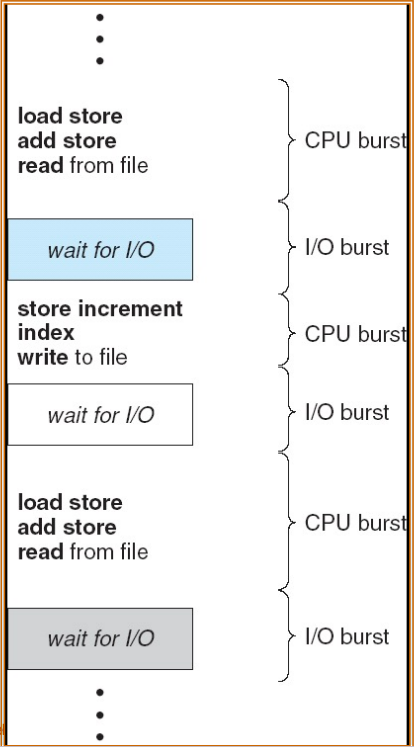
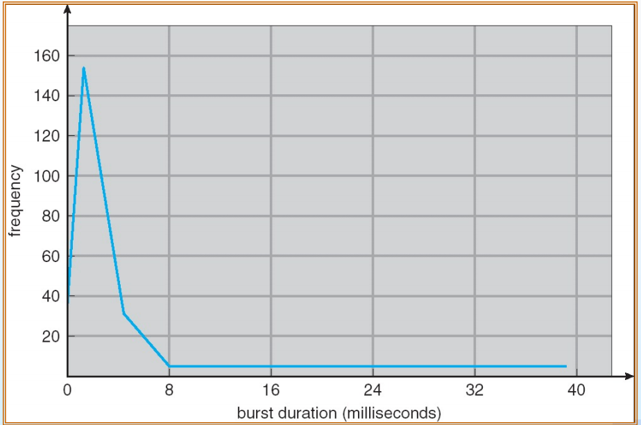
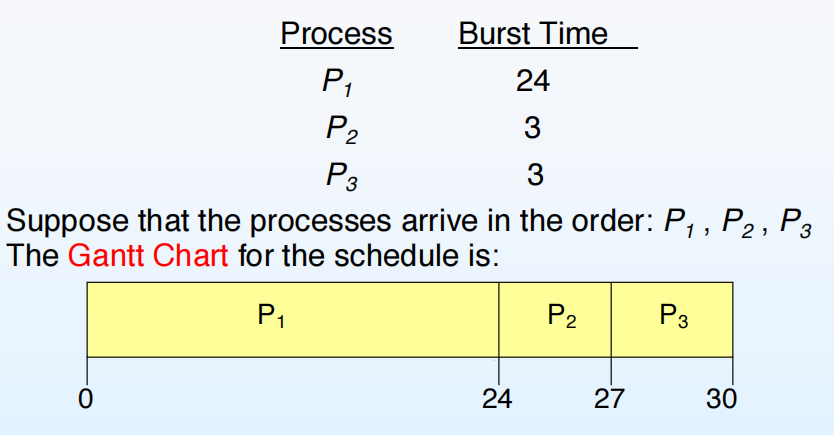
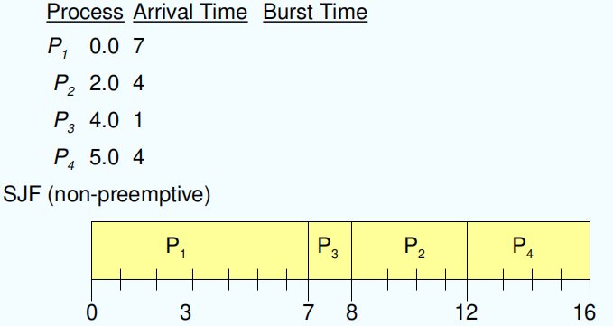
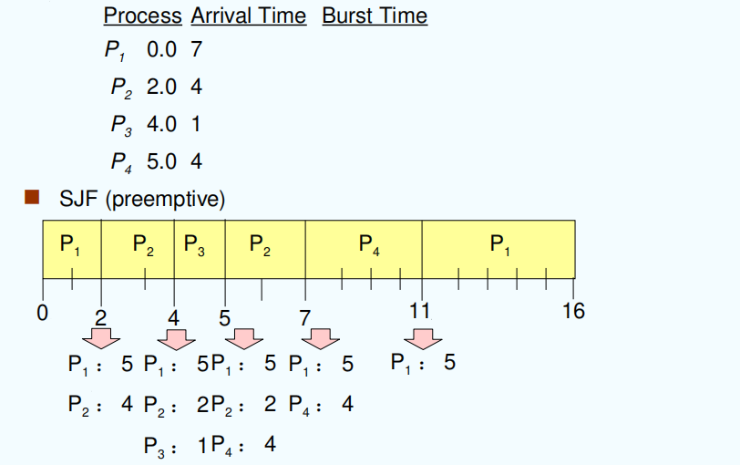
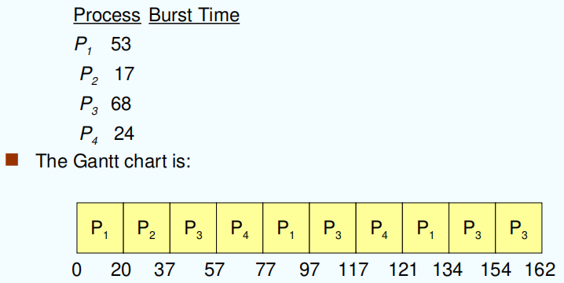
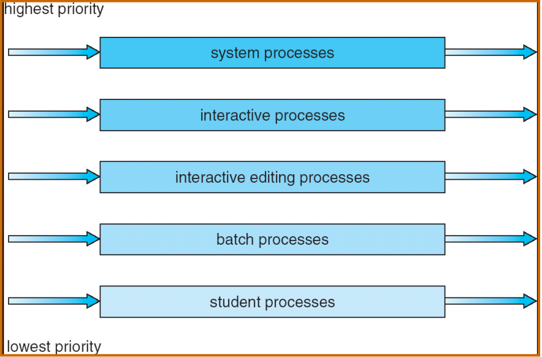
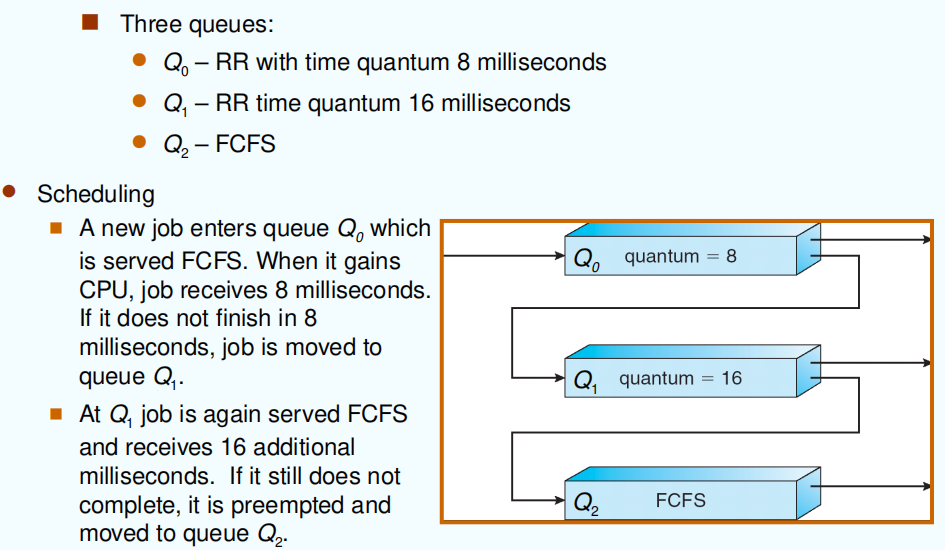

CPU Scheduling
约 2559 个字 8 张图片 预计阅读时间 17 分钟
基本概念
- 目标：通过
multiprogramming提高CPU利用率 - CPU-I/O Burst Cycle：进程执行由CPU执行周期和I/O等待周期组成

在目前的大部分程序中，进程实际运行时耗时更多的还是 I/O操作 而不是 CPU运算
- Histogram of CPU-burst Times

从图上可以看出，大部分 CPU burst 的时间还是非常短的，因而在设计实现 CPU 调度算法的时候需要简单高效快速。
调度过程
具体过程
选择内存中处于 ready 态的进程，并且为其分配 CPU 资源
发生情况
- 当一个进程从
running态变为waiting态（出现 I/O 请求或者 wait()）（非抢占式） - 当一个进程从
running态变为ready态（出现更高级别的进程）（抢占式） - 当一个进程从
waiting态变为ready态 （I/O 请求结束）（抢占式） - 当一个进程终止后（非抢占式）
两种调度方式
- 抢占式的：不管运行中的进程是否结束，强行终止运行中的进程，并且进行 CPU 调度
- 非抢占式的：只有当运行中进程自己释放 CPU 资源之后，也就是 CPU 资源空闲时进行调度
目前主要使用的抢占式的调度方式
调度程序
- 上下文转换
- 模态转变，转化回用户态（非必须）
- 跳转到用户程序中的正确位置并且继续执行
调度延迟： 调度程序停止一个进程并启动另一个进程所需的时间
调度标准
- CPU 利用率(CPU utilization)：尽可能提高 CPU 利用率
- 吞吐率(Throughput)：单位之间内完成进程的数量
- 周转时间(Turnaround time)：进程从提交到结束的使用时间，包含调度使用的时间和等待时间
- 带权周转时间：进程周转时间 / 进程在 CPU 中运行的时间
- 等待时间(Waiting time)：进程在
ready queue中等待的时间 - 响应时间(Response time)：当程序提交之后到第一次响应的时间，而不是程序最终结束的时间
调度算法
FCFS (First-Come. First-Served)
先来先服务的调度策略
示例

- Waiting time for \(P_1=0;~P_2=24;~P_3=27\)
- Average waiting time: \((0 + 24 + 27) / 3 = 17\)
- Turnaround time: \(P_1=24;~P_2=27;~P_3=30\)
- Throughput: \(3 / 30\)
特点
- 在日常生活中也很常见（食堂排队）
- 是一个非抢占式算法
- 优点：算法比较公平
- 缺点：不能做到全局最优
护航效应（Convoy effect）：短进程必须要在前面的长进程之后才能运行，导致平均等待时间较长，并且会导致 I/O 设备或者 CPU 的闲置。
总结
有利于长作业，不利于短作业；有利于 CPU 繁忙型，不利于 I/O 繁忙型。
SJF (Shortest-Job-First)
优先调度 CPU burst 小的进程的调度策略
两种模式
- 非抢占式的：只有当当前进程结束后，才调用其他进程中剩余时间最小的进程
- 抢占式的：当有一个新的进程进入 ready queue 之后，判断当前进程的剩余时间是不是最小的，如果不是的话强行停止当前进程，并且调用剩余时间最小的进程。
示例
非抢占式的情况

- Average waiting time = (0 + 6 + 3 + 7) / 4 = 4
- Scheduling times: 4
 waiting time 计算时是开始时间减去到达时间
waiting time 计算时是开始时间减去到达时间
调度次数计算时不要忘了加上第一次调度
抢占式的情况

- Average waiting time = (9 + 1 + 0 + 2) / 4 = 3
- Scheduling times: 6
预测下一个 CPU burst 的长度
由于在实际生活中我们无法得知下一个 CPU burst 的具体消耗时间，所以我们需要对它的长度进行一定的预测。
通常通过参考前面的 CPU burst 的长度，使用指数平均法（exponential averaging）来进行预测
-
\[t_n = actual~length~of~n^{th}~CPU~burst\]
-
\[\tau_{n+1}=predicted~value~for~the~next~CPU~burst\]
-
\[\alpha,0\le\alpha\le1\]
-
\[Define:\tau_{n+1}=\alpha t_n+(1-\alpha)\tau_n\]
特点
-
短距离优先调度策略（SJF）的平均等待时间（Average waiting time）一直是最小的
-
会出现饥饿线程（当一直出现 CPU burst 短的线程时，某个线程可能会一直得不到调用）
优先级调度
-
每个线程都会分配一个优先级，优先级高的线程优先运行
-
同样具有抢占式和非抢占式两种模式。
-
SJF 也是一种优先级调度策略。
-
优先级可以分为静态优先级和动态优先级
-
静态优先级同样会出现饥饿线程问题
- 解决方式（老化 aging）使用动态优先级，低优先级线程在长时间不运行之后会慢慢提高优先级
HRRN 响应比优先
\(Response~Ratio(响应比)=\frac{waiting~time+CPU~burst}{CPU~burst}\)
工作原理
- 初始化：
- 记录每个进程的到达时间和所需的服务时间。
- 计算响应比：
- 对于每个就绪队列中的进程，计算其响应比。
- 选择最高响应比的进程：
- 选择具有最高响应比的进程执行。
- 如果有多个进程具有相同的最高响应比，则可以按照其他规则（如先到先服务）来选择。
- 更新等待时间和响应比：
- 每次调度后，更新所有就绪队列中进程的等待时间。
- 重新计算所有进程的响应比。
通常认为这是非抢占式的
特点
- HRRN is a compromise between FCFS and SJF（一种折中策略）
- 缺点：计算响应比需要一定的时间
- 优点：不会出现饥饿线程，提高对用用户的响应
Round Robin (RR)
-
时间片轮转调度算法，起源于签名算法（环状签名）
-
对于每一个进入的进程，都会分配一定的运行时间，当运行时间结束后就调度到下一个进程
实例

- Typically, higher average turnaound than SJF, but better response
- CPU utilization and Interactivity may not be satisfied at the same time
特点
- 第一次等待时间不会过长，假设 ready queue 中有 n 个进程，并且每个时间片的长度为 q，等待时间不会超过 (n-1)q
- 表现情况
- q large => FCFS
-
q small => 调度消耗时间开销较大，因而 q 不能过小
-
多适用于分时系统或者多任务系统
多层队列
- ready queue 被分成多个队列，不同队列内部使用不同的调度算法
将 ready queue 中划分成两个 queue，分别是 foreground(interactive - 前端需要与用户不断交互) 以及 background(batch - 后端为计算密集型)
对于这两个 queue 的内部，分别使用不同的调度算法
- foreground - RR
- background - FCFS
对于两个 queue 之间的调度，也可以使用不同的调度方式
- Fixed priority scheduling - 固定有限调度（在 background queue 之前优先调度 foreground queue），但是这样会出现饥饿现成问题
- Time slice - 每一个 queue 都能获取一定时间的时间片，但是可以设定不同的权重时间，比如 80% to foreground in RR, 20% to background in FCFS
 举个栗子
举个栗子

Multilevel Feedback Queue
多级反馈进程，运行进程在不同队列之间进行移动，通过在不同队列之间的移动改变进程的优先级
使用时需要考虑的因素
- number of queues
- scheduling algorithms for each queue
- method used to determine when to upgrade a process
- method used to determine when to demote a process
- method used to determine which queue a process will enter when that process needs service
具体使用方式
- 设置多个就绪队列，优先级从第一级依次降低
- 优先级高的队列，进程时间片越短
- 每个队列都采用 FCFS ，若在该时间片完成，则撒离系统，未完成，转入下一级级队列（降低优先级）
- 按队列优先级调度，仅当上一级为空时，才运行下一级
- 进程首次进入时会进去优先级高的队列
一个栗子

Multiple-Processor Scheduling
多处理器调度
-
CPU scheduling more complex when multiple CPUs are available
-
Homogeneous processors within a multiprocessor
-
Load balancing 负载均衡
-
Asymmetric multiprocessing – only one processor accesses the system data structures, alleviating the need for data sharing; others execute only user code. 非对称处理器，有一个处理器专门负责进行调度，其余处理器负责运行 存在问题：当负责的调度的 CPU 出现问题，整个系统就无法正常运行
-
Symmetric multiprocessing (SMP) – each processor is self-scheduling. Multiple processors might access and update a common data structure. 对称处理器，所有的处理器各自负责各自的现成调度
Real-Time Scheduling
实时系统调度：当一个线程进来后，一定要在规定的时间内运行完成
- Hard real-time systems – required to complete a critical task within a guaranteed amount of time 硬实时系统：进程必须要在 DDL 到来直接结束运行，否则会产生很严重的后果。比如飞机的起飞，工业制造，医疗手术等。
- Soft real-time computing – requires that critical processes receive priority over less fortunate ones 软实时系统：进程就算在 DDL 到来的时候还没有运行完，也不会产生过于严重的后果。比如腾讯会议视频系统允许短时间的延迟。
相关调度算法
Earliest Deadline First ( 最早截止时间优先 )
截止时间最早的进程优先运行
Least Laxity First ( 最低松弛度优先 )
- A 的松弛度 = A 必须完成的时间 -A 运行需要的时间 - 当前时间
- 例如 : 有一个任务需要在 400ms 时必须完成，它需要运行 150ms ，当前时刻为 100ms, 其松弛程度为 400 - 150 = 150ms
- 因为需要一定时间进行计算，所以在实时系统中使用较少
Rate Monotonic Scheduling (速率单调调度)
基于任务的周期来分配优先级，周期越短的任务优先级越高
Thread Scheduling
又称 Contention Scope（争用范围），是指线程之间竞争 CPU 资源的范围
线程分为用户级线程和内核级线程，因而线程调度也存在不同方式
- Local Scheduling (Process-Contention Scope) – How the threads library decides which thread to put onto an available LWP
- Global Scheduling (System-Contention Scope) – How the kernel decides which kernel thread to run next
- Many to one：单个线程堵塞时，整个线程组都会阻塞，因而相当于线程调度
- One to one